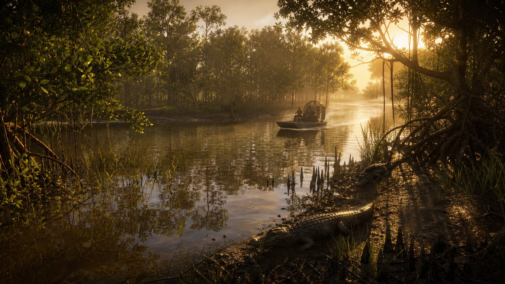

Mangroves & zones humides
La description officielle nomme les mangroves et présente la région comme une vaste zone humide. Les frontières exactes de Grassrivers sur la carte n'ont pas été publiées.

RÉGION OFFICIELLE · « WELCOME TO THE WETLANDS »
« Le joyau indompté de la couronne de Leonida », selon Rockstar : une étendue primordiale de mangroves où les alligators ne sont que le danger le plus célèbre.
Rockstar décrit Grassrivers comme un « primordial expanse » de mangroves : on ne sait jamais ce qui se trouve sous la surface, et des prédateurs plus dangereux ou des découvertes plus étranges attendraient dans les racines. Le texte établit le ton et l'environnement, pas une liste complète d'ennemis, d'activités ou de lieux visitables.
La description officielle nomme les mangroves et présente la région comme une vaste zone humide. Les frontières exactes de Grassrivers sur la carte n'ont pas été publiées.
Des captures et bandes-annonces montrent des alligators et des embarcations à hélice aérienne dans un décor marécageux. Leur présence dans des images ne révèle pas à elle seule les règles de pilotage, les missions ou les systèmes de chasse.
La formule Rockstar garde volontairement le mystère. Ne transforme pas cette allusion en liste de créatures, en menace précise ou en contenu de mission avant confirmation.
La parenté visuelle avec les Everglades de Floride est largement relevée par les médias et les fans. C'est une inspiration plausible, pas une promesse de géographie ou de parcours calquée au réel.
Au 18/11, les résultats trouvés sur Reddit et GTAForums n'apportent pas de nouvelle localisation vérifiable qui dépasse les descriptions et captures officielles. Les vidéos d'analyse cartographique peuvent aider à revoir les plans, mais leurs « pings » et frontières restent des propositions de fans.